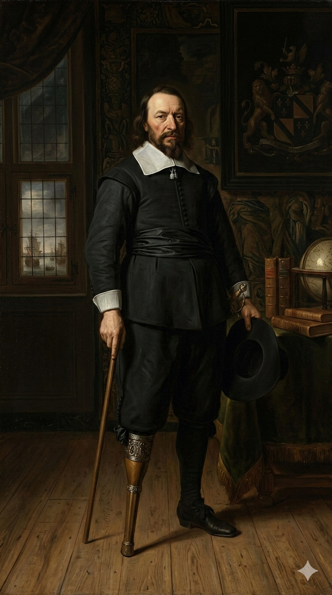
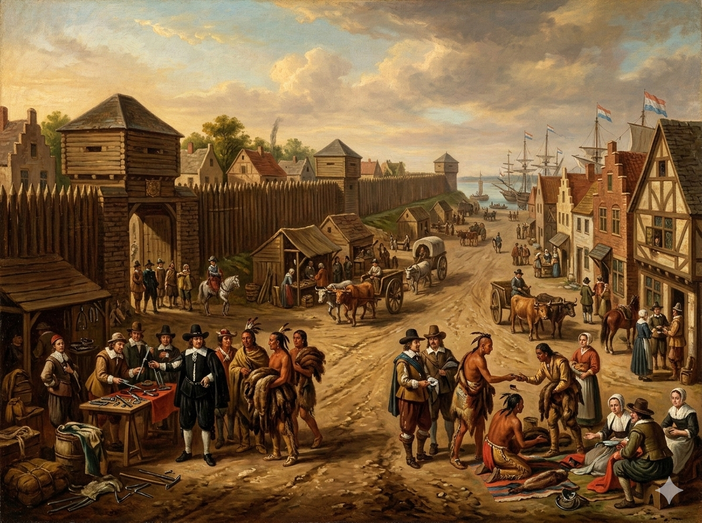

1. שנות פעילות, הקמה ויעדים
שנות הקמה: ב-1624 הוקמה המושבה ההולנדית "הולנד החדשה" (New Netherland) שבירתה "ניו אמסטרדם". בשנת 1664 נכבשה המושבה על ידי האנגלים ושמה שונה ל"ניו יורק".
ישות מקימה: ההולנדים הקימו את המושבה דרך "חברת הודו המערבית ההולנדית" כמיזם מסחרי. לאחר הכיבוש ב-1664, היא הפכה למושבה קניינית (Proprietary) בבעלותו הבלעדית של ג'יימס, הדוכס מיורק (אחיו של מלך אנגליה).
היעדים המקוריים: המטרה ההולנדית המקורית הייתה מסחרית נטו: שליטה בסחר הפרוות הרווחי ביותר באמריקה וניצול הנהר העצום כמסדרון תחבורה. האנגלים כבשו את המושבה כדי למחוק את הנוכחות ההולנדית שאיימה על ההגמוניה הבריטית, וכדי לחבר גיאוגרפית את מושבות ניו אינגלנד בצפון עם וירג'יניה ומרילנד בדרום.
2. רקע המייסדים: מהולנד לבריטניה

פטר מינואיט (Peter Minuit) (1580–1638)
המושל ההולנדי שביצע את עסקת הנדל"ן המפורסמת ביותר בהיסטוריה: ב-1626 הוא "קנה" את האי מנהטן (Manhattan) מידי שבט הלנאפה תמורת סחורות (חרוזי זכוכית, כלי עבודה ובדים) בשווי מוערך של 60 גילדן הולנדים (סכום השווה למאות דולרים בודדים כיום). האינדיאנים, שלא החזיקו במושג של "בעלות פרטית על קרקע", כנראה חשבו שהם בסך הכל מאשרים להולנדים זכות מעבר או ציד משותף.
פטר סטויווסנט (Peter Stuyvesant) (1612–1672)
המנהל הכללי האחרון של ניו אמסטרדם מטעם ההולנדים. איש צבא נוקשה, קלוויניסט אדוק, שאיבד את רגלו הימנית בקרב מול הספרדים וצעד על רגל עץ מעוטרת כסף. למרות שהביא סדר וביטחון לעיר המבולגנת, הוא היה שנוא על התושבים בגלל עריצותו וחוסר הסובלנות שלו כלפי יהודים וקווייקרים. כשהבריטים תקפו ב-1664, איש מתושבי העיר לא היה מוכן להילחם עבורו, והוא נאלץ להיכנע.
ג'יימס, דוכס יורק (לימים המלך ג'יימס השני) (1633–1701)
אחיו של מלך אנגליה צ'ארלס השני. המלך העניק לו במתנה את כל השטח שבין נהר הקונטיקט לנהר הדלאוור – שטח שהיה באותו זמן, כאמור, בשליטת ההולנדים! ג'יימס שלח צי מלחמה קטן שתבע את העיר, והפך לבעלים הפרטי של המושבה. הוא ניהל אותה כאוטוקרט, ללא מועצה נבחרת, עד שהומלך למלך אנגליה (והודח כמה שנים מאוחר יותר בגלל נטיותיו הקתוליות).
3. אידאולוגיה: קפיטליזם וסובלנות מסחרית
ניו יורק הייתה שונה לחלוטין מניו אינגלנד. לא הייתה לה שום כוונה לתקן את העולם מבחינה דתית:
- כסף לפני דת: האידאולוגיה ההולנדית (שהבריטים אימצו בחלקה) הייתה פרגמטית – המסחר הוא המלך. כדי שהעיר תפרח, הם היו חייבים לקבל סוחרים מכל לאום ודת. זה יצר סובלנות דתית מתוך הכרח כלכלי, ולא מתוך אידאלים זכויות אדם (כמו בפנסילבניה או רוד איילנד).
- מורשת הולנדית של חירות אזרחית: למרות השלטון האנגלי, ניו יורק שמרה על מנהגים חברתיים הולנדיים רבים. למשל, נשים בניו יורק נהנו מזכויות קניין ועסקים גבוהות בהרבה מאשר נשים במסצ'וסטס או וירג'יניה, מכיוון שהמשפט ההולנדי התיר להן לנהל עסקים באופן עצמאי.
4. גיאוגרפיה: המפתח ליבשת (נהר ההדסון)
הגיאוגרפיה של ניו יורק הפכה אותה ליעד האסטרטגי החשוב ביותר בצפון אמריקה:
- הנמל הטבעי ומנהטן: האי מנהטן ממוקם בנקודת המפגש של נהרות אל תוך אוקיינוס עמוק. הנמל המוגן מסערות לא קפא בחורף ואפשר לספינות ענק לעגון ממש על קו החוף. ההולנדים בנו בקצה הדרומי של האי חומה הגנתית עשויה בולי עץ כדי להתגונן ממתקפות – החומה הזו נתנה את השם לרחוב העסקים הידוע ביותר בעולם: "וול סטריט" (Wall Street).
- נהר ההדסון (Hudson River): זהו ה"אוטובאן" של המאה ה-17. הנהר הרחב זורם מהצפון הרחוק ישירות דרומה לניו יורק. הוא אפשר למתיישבים גישה ישירה וימית לאימפריית סחר הפרוות של שבט האירוקוי (Iroquois) בצפון (אזור אלבני), ולהזרים את הסחורה ללא מאמץ יבשתי עד לנמל שבמנהטן.
5. כלכלה: מפרוות לסחר עולמי

הכלכלה העירונית של ניו יורק צמחה בבת אחת על חשבון עורף חקלאי מסורתי:
- סחר הפרוות (Fur Trade): המנוע הכלכלי הראשון היה פרוות הבונה (Beaver), שהיו שיא האופנה באירופה להכנת כובעים חסיני מים. הסחר הזה יצר בריתות פוליטיות עמוקות ואלימות עם שבטי האינדיאנים.
- אחוזות ה"פטרון" (Patroonships): ההולנדים, ולאחריהם הבריטים, חילקו אחוזות ענק לאורך הנהר לאצילים מקורבים. בניגוד לחוות הקטנות של מסצ'וסטס, האחוזות האלה נוהלו בצורה חצי-פיאודלית על ידי חקלאים-שוכרים (Tenant farmers).
- עבדות עירונית: בניו יורק התפתחה צורה של עבדות שונה מזו של מטעי הדרום. רבים מהעבדים האפריקאים שייבאה החברה ההולנדית חיו בעיר עצמה ועסקו במלאכות כפיים (נפחים, בנאים, פריקת ספינות). בעיר היה אחוז גבוה של שחורים חופשיים ושחורים משועבדים שחיו בסמיכות ללבנים.
6. דמוגרפיה: כור ההיתוך האמריקאי המקורי
ניו יורק הייתה העיר הרב-תרבותית הראשונה בעולם המודרני. "כור ההיתוך" האמריקאי נולד שם במאה ה-17:
- מגוון לשוני ודתי: כבר בשנות ה-40 של המאה ה-17, מנה כומר שעבר בניו אמסטרדם 18 שפות שונות המדוברות ברחובות העיר (שמנתה אז פחות מ-1,000 תושבים!). חיו בה הולנדים, אנגלים, צרפתים, וולונים (בלגים), גרמנים, אפריקאים, שוודים, וילידים.
- הקהילה היהודית: בספטמבר 1654 הגיעה לעיר ספינה מברזיל עם 23 פליטים יהודים-ספרדים (שנמלטו מהאינקוויזיציה). המושל סטויווסנט דרש לגרשם, אך מנהלי החברה בהולנד – בלחץ בעלי מניות יהודים באמסטרדם – הורו לו לאפשר להם להישאר, לחיות ולסחור, ובכך החלה הנוכחות היהודית הרציפה באמריקה הצפונית.
7. מאבקי השליטה: הכיבוש ומרד לייזלר
השלטון בניו יורק התאפיין בהפיכות חדות ובמאבקים אלימים בין מעמדות ולאומים:
מכיבוש בריטי למרד פנימי
- מועדי המאבק: 1664 (הכיבוש הבריטי), 1689-1691 (מרד לייזלר).
- אישים בולטים: פטר סטויווסנט, ג'יימס דוכס יורק, והסוחר הגרמני-הולנדי ג'ייקוב לייזלר (Jacob Leisler).
- מהלך המאבקים: המאבק הראשון היה קצרצר. באוגוסט 1664, ארבע ספינות מלחמה אנגליות הקיפו את ניו אמסטרדם ודרשו את כניעתה. תושבי העיר, שמאסו במיסים הגבוהים של החברה ההולנדית ובעריצות של המושל סטויווסנט, סירבו להגן עליו. העיר נכנעה ללא קרב והועברה לשליטת האנגלים (למעט כיבוש חוזר הולנדי קצרצר ב-1673 שלא החזיק מעמד). המאבק המדמם יותר הגיע רבע מאה מאוחר יותר. כאשר הגיעה הבשורה על הדחת המלך הקתולי ג'יימס השני (1689), המושל המלכותי בניו יורק איבד מסמכותו. וואקום שלטוני זה נוצל על ידי ג'ייקוב לייזלר, סוחר גרמני עשיר שייצג את ההמונים (החקלאים, העניים, וההולנדים ששנאו את האליטה האנגלית החדשה). לייזלר הוביל מיליציה, תפס את המבצר בעיר, ושלט בניו יורק כרודן במשך כמעט שנתיים. בסופו של דבר, המלך החדש ויליאם שלח כוחות אנגלים להשתלט מחדש. לייזלר סירב להיכנע מיד, נשפט בעוון בגידה, ו**הוצא להורג פומבית באכזריות (נתלה וראשו נערף)** ב-1691. המרד הותיר את ניו יורק מפולגת למחנות יריבים למשך עשרות שנים.
8. מחקר אטימולוגי: מאמסטרדם ליורק
New Amsterdam (ניו אמסטרדם)
מקור: הולנדית / גיאוגרפיהשם המקורי של המושבה (1624). ההולנדים קראו לה על שם עיר הבירה והמרכז הכלכלי של מולדתם - אמסטרדם. השם המקורי של העיר האירופאית עצמה נובע מסכר (Dam) שנבנה על נהר האמסטל (Amstel), כלומר: הסכר על האמסטל החדש.
York (יורק)
מקור: קלטי-רומי / ויקינגייורק היא עיר עתיקה מאוד בצפון אנגליה. שמה עבר גלגולים רבים: הרומאים קראו לה Eboracum (מילה קלטית שעברה לטיניזציה ופירושה עץ טקסוס). הוויקינגים שכבשו אותה שינו את השם ל-Jórvík, שעם השנים קוצר באנגלית ימי-הביניים ל-York.
New York (ניו יורק)
עם הכיבוש האנגלי ב-1664, המלך צ'ארלס השני נתן את המושבה לאחיו הצעיר, מפקד הצי המלכותי, ג'יימס סטיוארט - הדוכס מיורק (Duke of York). העיר והמושבה שונו מיד ל"ניו יורק" לכבודו של הבעלים החדש. כך נמחקה המורשת השמית של ההולנדים ביום אחד והוחלפה בחנופה פוליטית למלוכה הבריטית.